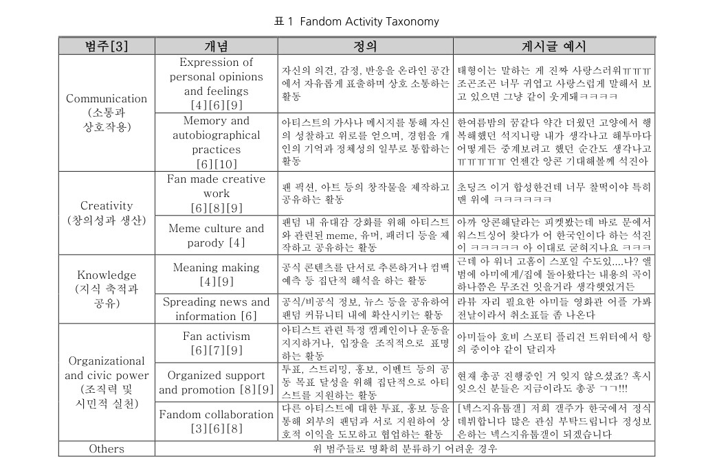
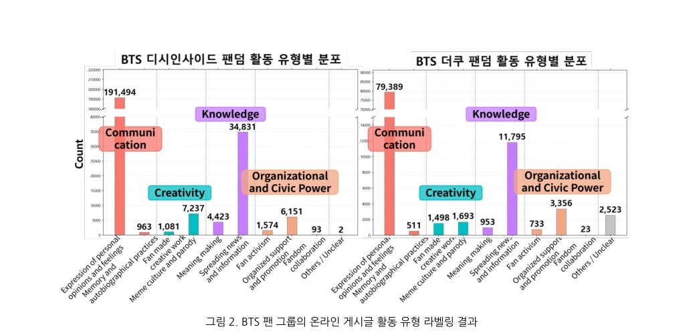

01프로젝트 한눈에 보기
350,323건 커뮤니티 게시글을 4개 상위, 9개 세부 활동 유형으로 구분하고 메타데이터 필터링 기반 검색을 구현함

팬덤 게시글 350,323건을 9개 활동 유형으로 분류하고, 질문과 관련된 유형만 검색하는 Domain RAG를 개발함.
02해결 방법
데이터 수집·정제
두 팬덤 커뮤니티의 게시글을 수집해 중복·노이즈를 정리함.
Taxonomy 설계
팬 활동을 4개 상위 범주와 9개 세부 활동 유형으로 정의해 라벨링 기준을 만들었음.
메타데이터 기반 검색
질문과 관련된 활동 유형을 먼저 판별하고, 해당 유형의 벡터 스토어를 대상으로 검색하도록 구성함.
동적 페르소나 응답 생성
검색된 맥락을 바탕으로 팬덤 특성이 반영된 답변 스타일을 동적으로 생성함.

03구현 및 연구 방법
전문가 기준을 실제 라벨 규칙으로 전환
사회과학 연구의 이론적 분류 기준을 게시글 단위에 적용 가능한 운영 정의로 바꾸어 데이터 품질을 확보함.
질문 유형에 맞는 검색 범위를 먼저 좁힘
단순 임베딩 유사도만 사용하지 않고 활동 유형 메타데이터를 함께 사용해 검색 정확도를 높였음.
정답이 있는 4지선다 평가셋 구축
모델의 응답이 실제 팬덤 맥락을 얼마나 정확히 반영하는지 비교 가능한 평가셋을 직접 구성함.
커뮤니티 간 차이도 함께 확인
디시인사이드와 더쿠의 구조적 차이가 활동 유형 분포와 검색 성능에 어떻게 반영되는지 분석함.
04핵심 결과
디시인사이드: 질의응답 정확도
동일 평가 질문 98개 기준.
더쿠: 질의응답 정확도
동일 평가 질문 82개 기준.
활동 유형 분포
두 커뮤니티 모두 감정 표현 및 정보 공유 게시글이 많이 나타남. 활동 유형별 분포가 서로 달라, 도메인 분류체계를 검색 조건으로 사용하는 구조가 필요함.

출처: HCI Korea 2026 FANDOM 논문, Table 3 및 Figure 2. 평가문항 총 180개.
05개인 기여 및 논문
- 디시인사이드·더쿠 데이터셋 수집·정제 및 팬덤 활동 유형 분류 체계(Taxonomy) 직접 설계
- GPT-5-nano 기반 활동 유형 라벨링 및 활동 유형 필터링 RAG·동적 페르소나 생성 프레임워크 구조 제안·구축에 핵심 기여
- 사회과학자 연구팀과 정기 미팅을 통해 사회과학적 인사이트가 시스템 설계·결과 해석에 반영되도록 조율
지식 구축 및 검색 품질 개선
현업 전문가의 업무 분류 기준을 메타데이터와 데이터 라벨링 규칙으로 구조화하고, 질의 유형에 따라 검색 대상을 필터링하는 기업 지식 검색 파이프라인에 활용 가능.